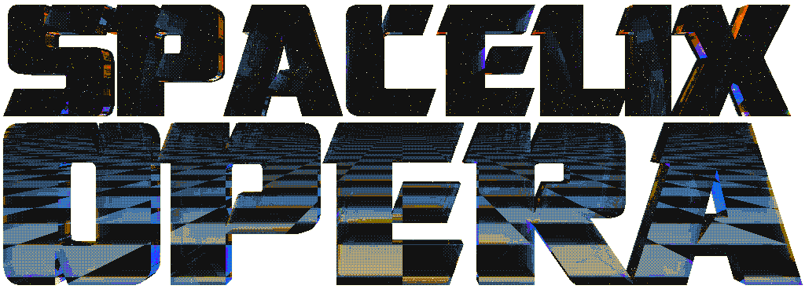
<- back to the main Felix Lipski siteHello, Space Cowboy!
Seems like you've just landed on the Spacelix Opera Landing Page™!
Spacelix Opera is:
- a game I'm working on
- a generative music project
- an exploration of early computer aesthetics
- an homage to the demoscene
Development updates are posted to my Twitter. Follow if you're interested!
Or send me a tip on Ko-Fi to support the project!
Game
As of now, on the gameplay level, it is a simple survivors-like / bullet heaven with a twist. Many effects like explosions and weapon firing are "synchronised" with the music. The survivors-like genre lends itself nicely to this sort of project, as the timing of the weapons is not controlled by the player.
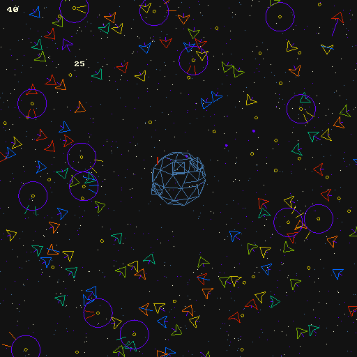
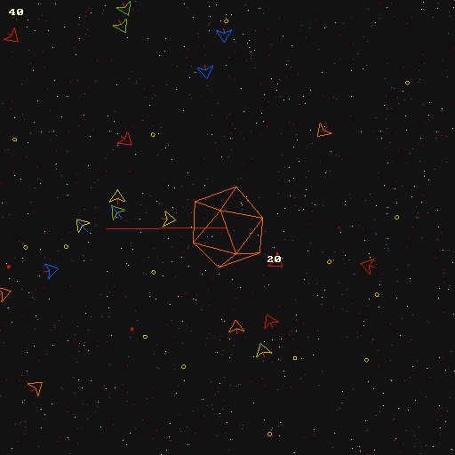
Music Generation
The music of the game is generated procedurally on the fly. As seen below, the "pulse" weapon is firing and at the same time the bass is playing. The explosions are hitting together with the snare. The "blaster" shoots together with the higher synth. This is the central idea of the game. As the music gets more and more intense, so will your fire power and fire rate increase (by playing more notes a second). In other games, or just in real life really, the effects and music compete for your attention. Here, they harmonise, as if it was a playable music video.
Here's a demonstration:
new weapon, "PULSE"
— Felix Lipski 🌈 SPACELIX OPERA (@felix_lipski) November 28, 2024
fires together with the bass
perhaps a bit overpowered... :D#SpacelixOpera #gamedev #indiegame #generativeart #space #synthwave #retro #lofi pic.twitter.com/zyqH7DUiLp
First look at the game I'm making #SpacelixOpera
— Felix Lipski 🌈 SPACELIX OPERA (@felix_lipski) November 27, 2024
The idea is: Weapons and sound effects synchronize with the music to create a cool effect.
The music is procedurally generated (not by AI!)#gamedev #lofi #indiegame #generativeart pic.twitter.com/AbnaRipuwa
*The site theme is not procedurally generated.
The idea is nothing that revolutionary, we have games like Crypt of the Necrodancer and Bullets per Minute, but as far as I know, all of the existing implementations are very mechanically demanding, or even straining. Nothing wrong with a challanging game of course, but I'd rather make something that:
- Sounds more cohesive, because it doesn't rely on player input so heavily.
- Can be enjoyed by a wider audience, due to being less hardcore.
Visual aspects
I'm aiming for a psychedelic version of the very early video game vector art. Think Asteroids, or the 1983 Star Wars arcade shooter. This amazing TempleOS project is also a major inspiration.
The more "filled in" spaces make heavy use of ordered dithering, probably my favourite visual effect. This further evokes the very early video game aesthetic.
In general all other elements will also evoke the nostalgia of early computing. The font used for example is an 8x8 IBM Bios font.
The more vibrant rainbow visual effect will appear in more intense song sections, during which enemy spawn rate and your fire power will also be ramped up to create an unholy psychedelic mess.
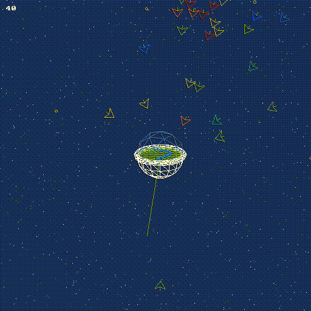
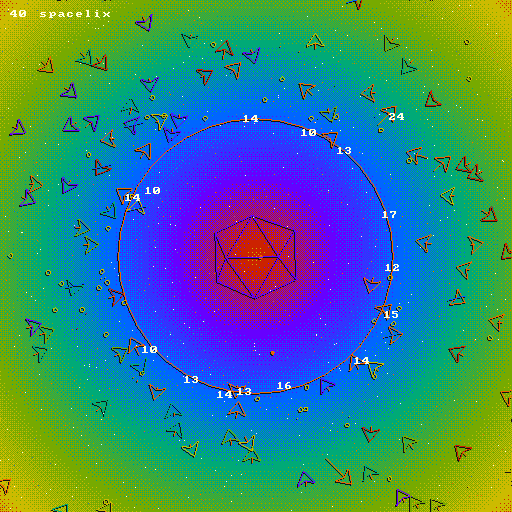
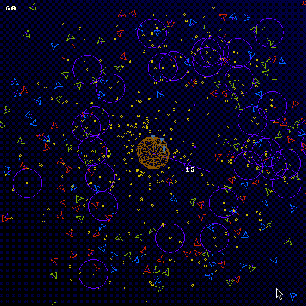
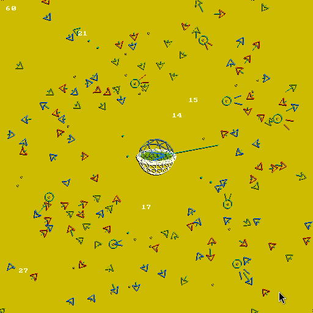
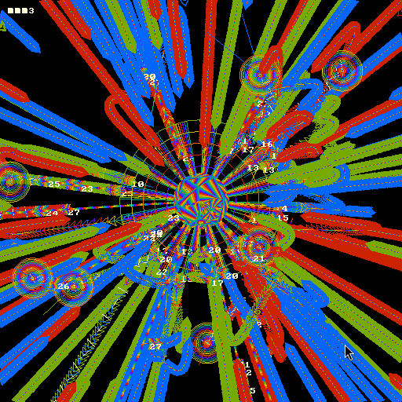
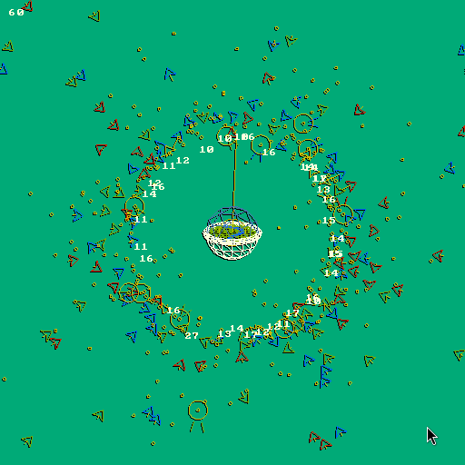
"spacelix" is the name of my color palette used in this game and
throughout my other works, like this site. Its main colors are:
Because the palette is so simple, you can very easily swap the color
to fit your favourite color scheme. I've put some popular ones into
the game:
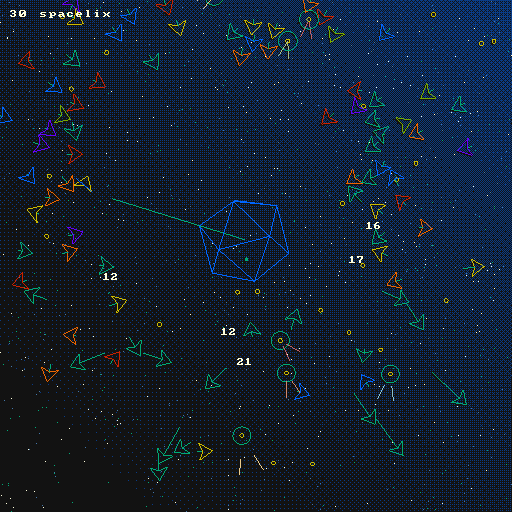
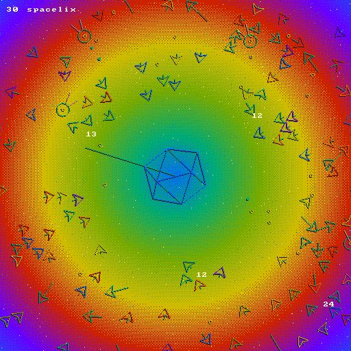
Tech stack
Made of: Haskell + Raylib + Apecs + Box2D + Csound
Made using: Blender + Povray + Aseprite + GNU/Linux
Made with: Love + Passion
Why
- I want to showcase the music generation algorithm I've been working on for some time now
- Every psychedelic game with kickass music I know, is kinda hard. The games made specifically to be psychedelic, are usually very calm and ambience driven. One way to look at the aim of this game is a less gory, easier Hotline Miami. I know there is a niche for that ;)
-
Further development of this music generation algorithm is an
imperative goal in itself.
Longer Rant
My conjecture is that music is an art abstract enough, that it can be generalised by some universal algorithm. And yes, by that, I mean all music. Unlike visual arts or literature, music relies on references to concrete physical objects to a much lesser extent. It is the purest way in which our brain notices patterns in sensory experiences. I have my own takes on "music theory" (or lack therof). I will expand on this in the future. Probably in a book / manifesto form. But for now, this games serves as an exploration of this problem space. - The vector aesthetic of very early video games is suprisingly under-explored by indie developers. In fact, the closest I can think of is a "bloomed" version in games like Geometry Wars
- I'm a certified Arch user (btw) and I want a video game to fit my fully riced power desktop (the game has an adjustable color palette)
Roadmap
- 🗹 Proof of concept
- 🗹 A few playable characters
- 🗹 VFX
- 🗹 Switchable color palettes
- ↻ Improvement to the music generation - in progress
- ☐ Weapon leveling system
- ☐ Compile on Windows
- ☐ Release playable demo
- ☐ UI polish
- ☐ Enemy variety
- ... to be announced
Further reading
...and that's it for now. ;D Follow my Twitter for development updates.
Direct any queries to felix@lipski.xyz or to my Twitter dms. I'm open to ideas, suggestions and any help, especially regarding the marketing, financing and community building aspects of the project.
To support the project, you can send me a tip on: Ko-Fi! Thank you from the mountain 🙏
See you, Space Cowboy... 🪐
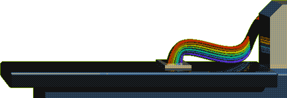